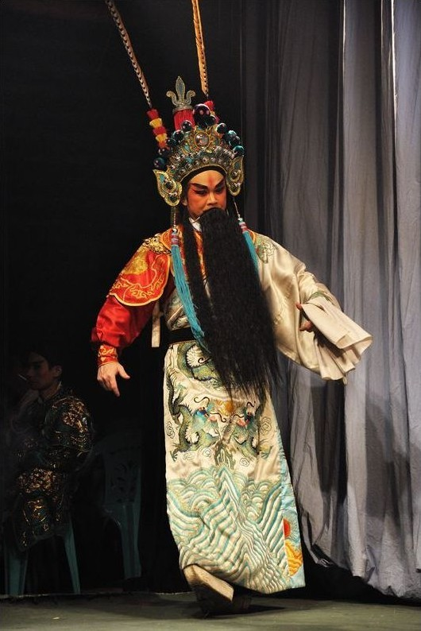
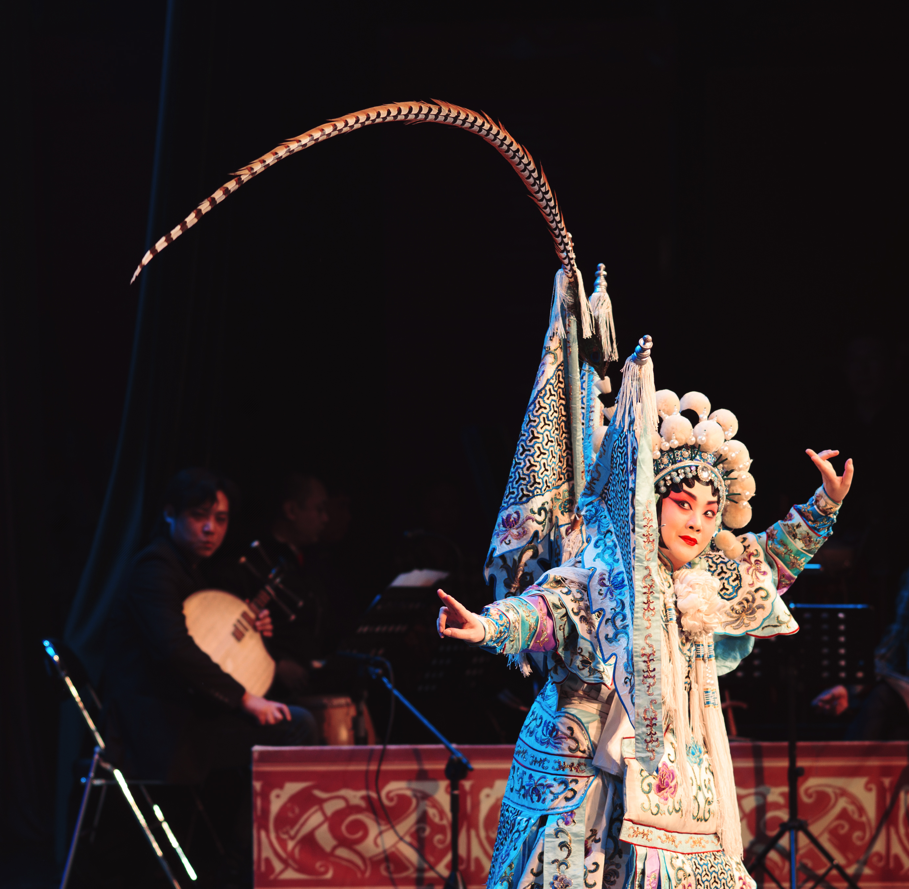
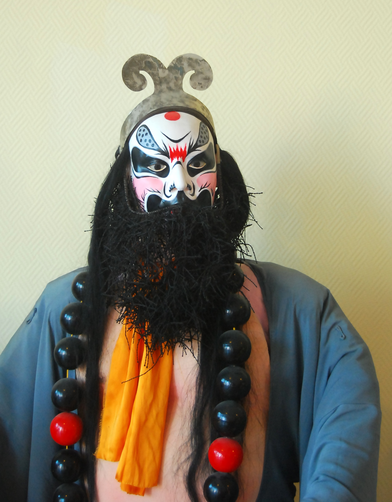
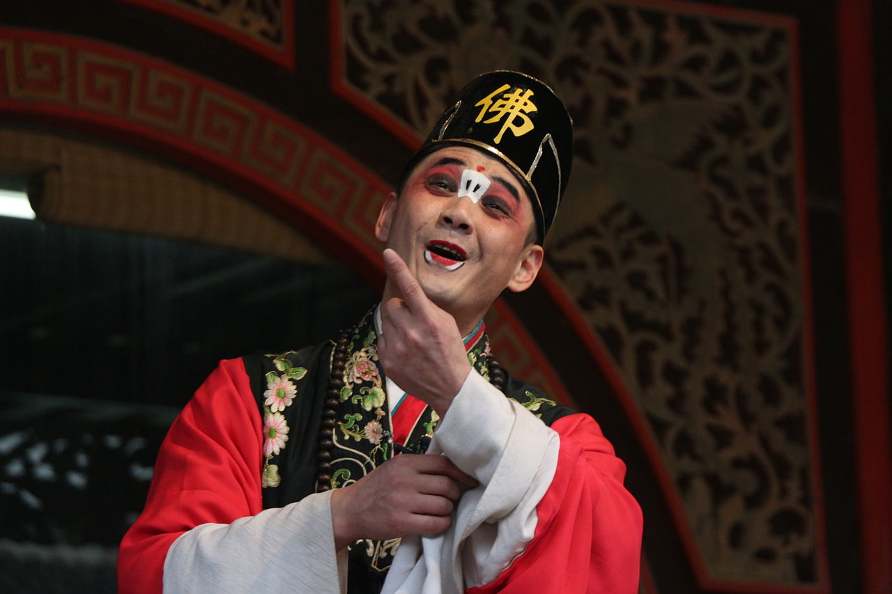
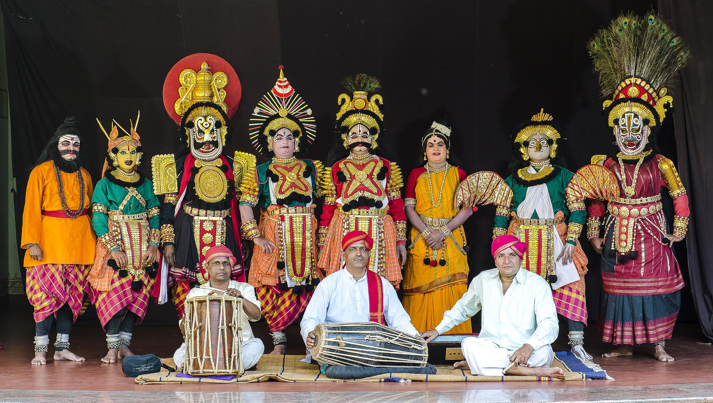

An evening of Chinese opera
A few days ago, I had the chance to watch a Chinese opera performance.
Chinese opera is quite interesting, and there are many similarities with Yakshagana, a traditional theatre form of Karnataka. The common features include the emphasis on music and dance. While music and dance are the main focus of Yakshagana, Chinese opera has (relatively) more acrobatics and a different style.
Not wanting to feel like a complete fool during the show, I decided to do some background reading on the art form and its features. I read that the most important feature of Chinese opera is the focus on beauty. The costume, performance, every motion must be beautiful. Even if the character is supposed to be grieving, it must be conveyed in a beautiful manner.
The characters/roles in Peking opera can be broadly classified into four:
- Sheng, or the main male role: A sheng is supposed to be scholarly, wealthy or important.
- Dan, or the main female role: likewise, but a woman.
- Jing, or the painted face: These are mythical characters, or otherwise characters with great power.
- Chou, or the (painted face) comedian.

Figure 1: Sheng

Figure 2: Dan

Figure 3: Jing

Figure 4: Chou

Figure 5: A Yakshagana troupe
Chinese opera does not use many props, instead, symbolic elements are used. A chair can represent a seat, a throne, or sometimes a mountain. A whip in hand indicates the presence of a horse, and an oar means that the character is in a boat. Walking along a big circle on stage signifies that the person has walked a great distance.
Likewise, the costume tells a lot about the character. Floral patterns indicate an affluent person, and plain robes mean that the person is poor. Generals generally wear green robes, and yellow robes are usually reserved for the emperor. The patterns on the dress indicate which era and dynasty the person is from. The headdress gives information about whether the person is a scholar or a warrior or a minister. Well, you get the drift.
Coming to the performance I went to: there were five main acts, each one by a different troupe. Each act lasted between twenty minutes and half an hour. Four of these were Peking opera troupes and one was Cantonese.
The first act was Dang Ma (Obstructing the horse). This was a scene taken from the folklore Generals of the Yang family. One of the members of the Yang family (who is the protagonist, or the Dan) happens to visit a restaurant in north China. The restaurant owner (Chou), who is originally from south China, wants to go back to his homeland but unfortunately does not have a passport. The owner hatches a plan to steal a passport from an unsuspecting customer from the south. Without realizing that the customer is from the famous Yang family, he proceeds with his plan, and a duel begins. This play developed into a visually stunning acrobatic display. The person playing the restaurant owner was splendid, performing back flips and jumps and cartwheels like it was nothing. All that with grace. Some highlights were acrobatics and difficult balancing acts performed on a chair.
The second one was called Hong Niang (The Matchmaker). This was about two lovers, who face opposition from the girl's parents. Another girl tries to get them together. Mostly a monologue by the second girl.
The third one was Shi Zi Jing Feng (I think this translates to Height of madness). The Dan was played by a famous artist, Mu Yuan Di. It was a stunning performance. The dan is a mother who has lost her child to a group of bandits. As she grieves over her lost child, she loses her mind, and progression from sadness to grief to insanity was depicted beautifully. Both the acting and the dance were simply amazing. The highlight was a point in the play when the stage fell silent for a few moments, and everyone was fixated on the expressions on Di's face. For about a minute, I think everyone forgot to breathe. She managed to captivate the entire hall. A truly masterclass performance. I was later stunned on learning that Mu Yuan Di is in fact a man!
The fourth was Cantonese style, Huan Jue Li Hen Tian, which also had a famous artist Liang Yao Ming (the Dan). This was taken from Dream of the red chamber, one of the four great classical novels in Chinese. This was another love story, where the woman symbolizes grass, and the man was stone. They are deeply in love with each other but they are fated to stay apart. Ends with grass telling stone to forget her.
The finale was Farewell my Concubine, with the concubine played by Hu Wenge. He is a famous artist who always plays the Dan, and is from the Mei school of Peking opera (founded by Mei Lanfang, considered one of the four great dan). The emperor (the Jing) was played by another famous artist, Wang Lijun. This was another masterclass performance by both artists. The story goes along these lines. The emperor of Chu, Xiang Yu is embroiled in a war with Liu Bang of Yan. Xiang Yu is about to lose the war, and pleads with his horse and concubine to abandon him and run away to safety. The horse refuses to leave him. His concubine, Yu says that she will die with him. When he refuses, she distracts him with a final dance, and the play ends with her killing herself. A touching end to the play. The play inspired a novel and a film with the same name.
In all, it was a wonderful evening. Classical music and dance, traditional theatre forms such as opera, Yakshagana, all offer pure unadulterated forms of art. I fervently hope that there is more encouragement given to these, and more people recognise and appreciate them for their true worth.